S7-1200 CPU 从固件 V4.1 起支持共享设备功能，可与最多 2 个 IO 控制器连接。
此外如果 S7-1200 CPU 作为共享设备的 IO 控制器，也需要至少固件版本 V4.1。
软件：
TIA V17
硬件：
CPU1217C DC/DC/DC V4.5
CPU1512C-1 PN V2.9
CPU1516F-3 PN/DP V2.9
设备类型及地址：
| CPU 型号 | 设备类型 | 设备名称 | IP 地址 | 子网掩码 |
| CPU1217C | 共享设备 | device_1217c | 192.168.0.17 | 255.255.255.0 |
| CPU1512C-1 PN | IO 控制器 1 | controler_1512c | 192.168.0.12 | 255.255.255.0 |
| CPU1516F-3 PN/DP | IO 控制器 2 | controler_1516f | 192.168.0.16 | 255.255.255.0 |
表1 设备类型及地址
（1）添加共享设备 CPU1217C
使用 STEP7 V17 创建一个新项目，添加 CPU1217C 。在设备视图中，设置 IP 地址 （192.168.0.17）、子网掩码（255.255.255.0）和设备名称“device_1217c”，如图 1 所示。
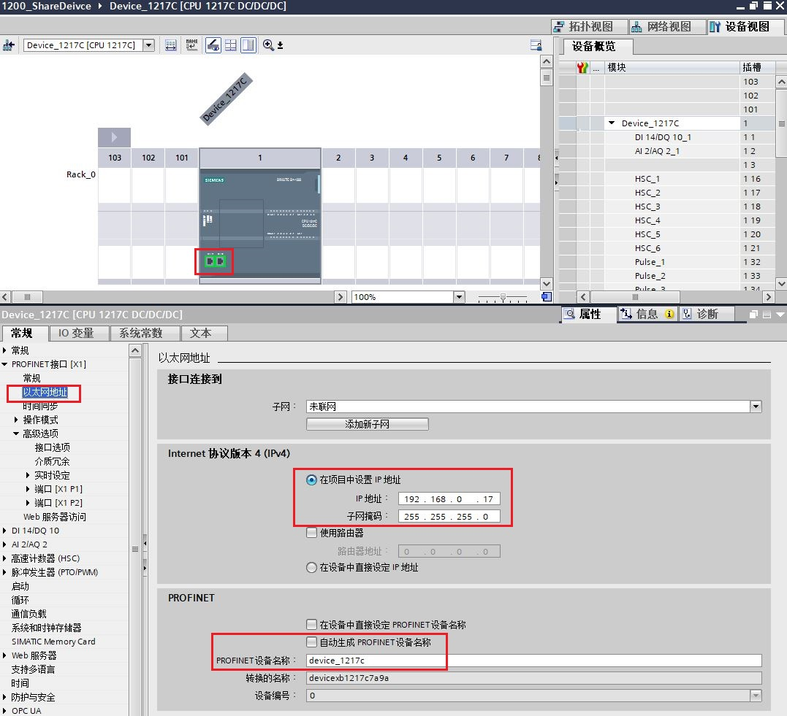
图 1 添加 CPU1217C 并设置 IP和设备名称
（2）使能“ IO 设备”组态
在 CPU1217C 以太网接口属性巡视窗口中，选择“常规 > 操作模式”，在“操作模式”界面中，使能“IO 设备”并将“已分配的 IO 控制器”设置为“未分配”， 如图 2 所示。
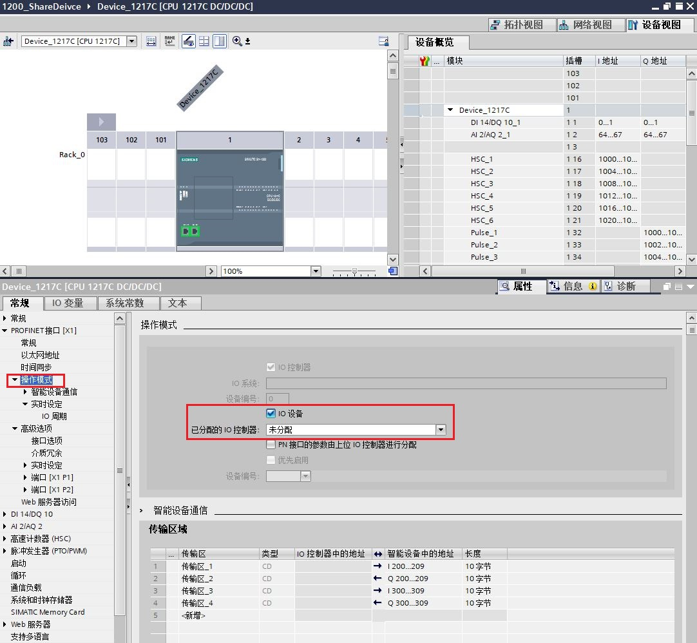
图 2 使能操作模式
（3）组态传输区
在 CPU1217C 以太网接口属性巡视窗口中，选择“常规 > 操作模式 > 智能设备通信”。在“传输区域”界面中，添加传输区，并定义本地的通信地址区域和通信长度。如图 3 所示，定义了 4 个传输区，“传输区_1”和“传输区_2”将用于与“controler_1512c” 通信；“传输区_3”和“传输区_4”将用于与“controler_1516f” 通信。
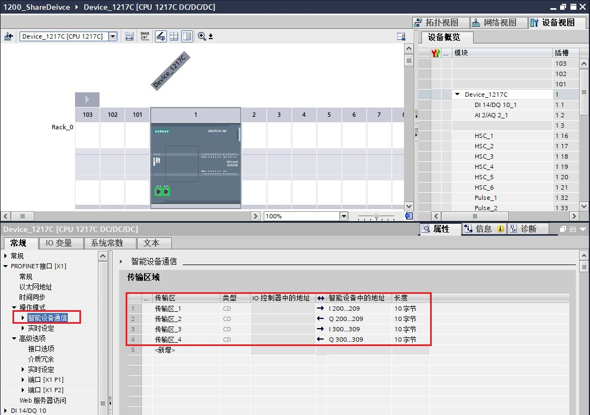
图 3 配置共享设备传输区域
（4）设置访问共享设备的 IO 控制器的数量
在 CPU1217C 以太网接口属性巡视窗口中，选择“常规 > 操作模式 > 实时设定”，在“Shared Device”中设置“可访问该智能设备的 IO 控制器的数量”为 2，如图 4 所示。
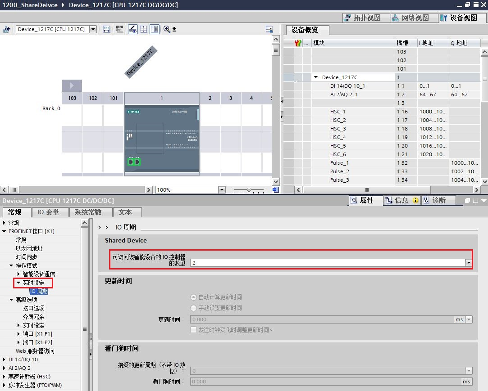
图 4 设置访问共享设备的 IO 控制器的数量
（5）导出 GSD 文件
保存编译 CPU1217C 硬件配置后，在 CPU1217C 以太网接口属性巡视窗口中，选择“常规 > 操作模式 > 智能设备通信”，在“智能设备通信”设置界面底部，单击"导出"按钮，生成共享设备的 GSD 文件，选择路径导出并将其保存。如图 5 所示。
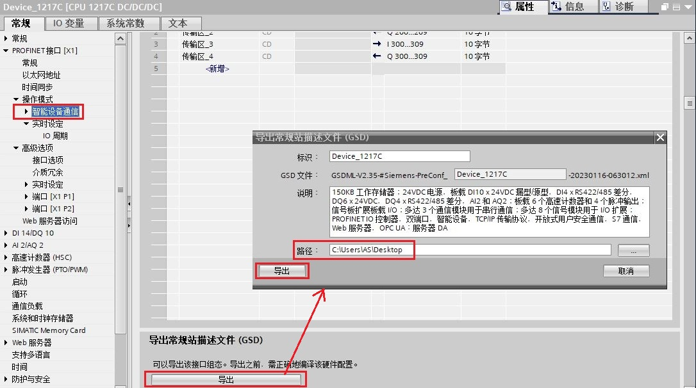
图 5 导出共享设备 GSD 文件
（1）添加 IO 控制器 1 （CPU1512C-1 PN）
在 STEP7 V17 中，添加 CPU1512C-1 PN。在设备视图中，为 CPU1512C-1 PN 以太网接口添加子网，设置 IP 地址 （192.168.0.12）、子网掩码（255.255.255.0）和设备名称“controler_1512c”，如图 6 所示。
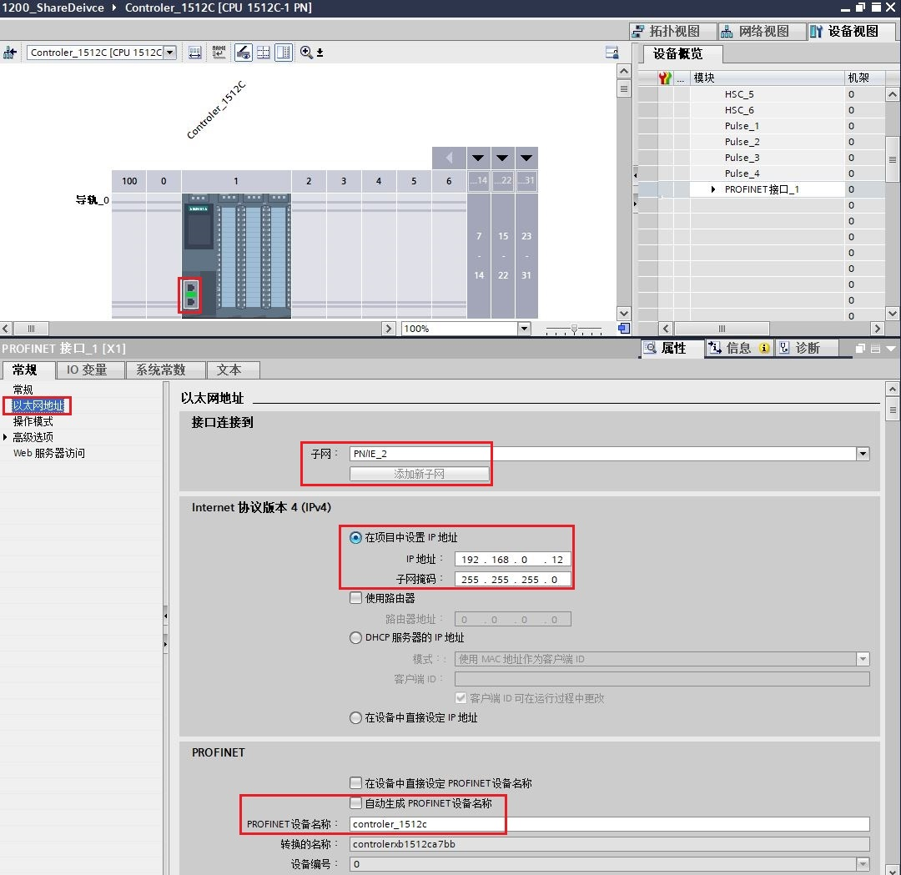
图 6 添加 CPU1512C-1 PN 并设置 IP 和设备名称
（2）导入 GSD 文件
在 TIA Portal 软件主菜单栏中，选择“选项 > 管理通用站描述文件”，在弹出的对话框中选择安装共享设备导出的 GSD 文件，如图 7 所示。
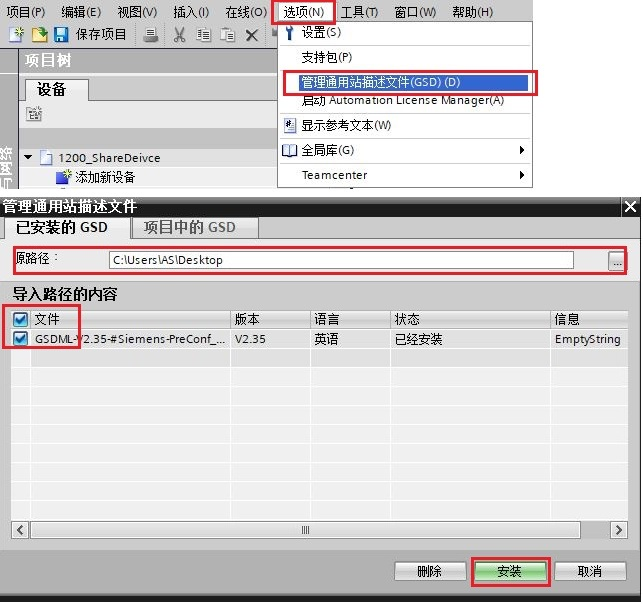
图 7 导入共享设备 GSD 文件
（3）添加共享设备
GSD 文件安装成功后，其将存在“硬件目录 > 其他现场设备 > PROFINET IO > PLCs & CPs > SIEMENS AG”路径下。在网络视图内，将共享设备拖放组态，并将其分配给 IO 控制器1 的 PROFINET 接口，如图 8 所示。
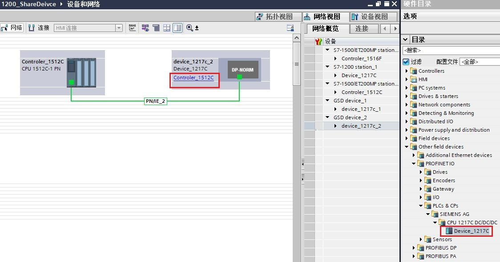
图 8 添加共享设备
 注意：添加共享设备的 GSD 文件的设备名称需要跟共享设备 CPU1217C 的设备名称保持一致，CPU1217C 设备名称为“device_1217c”，此处需要设置一致，如图 9 所示。
注意：添加共享设备的 GSD 文件的设备名称需要跟共享设备 CPU1217C 的设备名称保持一致，CPU1217C 设备名称为“device_1217c”，此处需要设置一致，如图 9 所示。
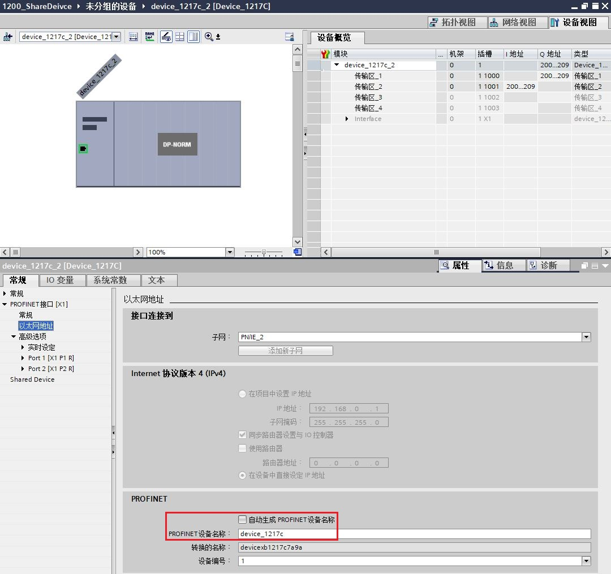
图 9 设置设备名称跟共享设备一致
（4）配置传输区访问权和地址区
在共享设备的设备视图中，选择“常规 > Shared Device”。在 Shared Device 访问权分配表中，为各个传输区分配 IO 控制器和 IO 地址，如图 10 所示。
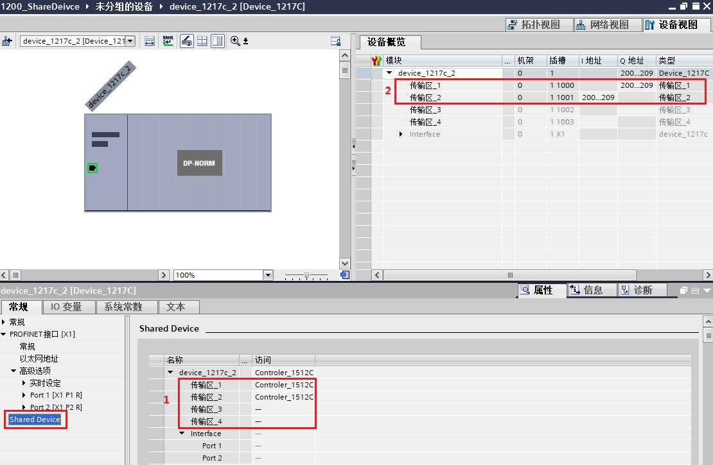
图 10 配置访问区权限和 IO 地址
1 . 不被 “controler_1512c” 访问的传输区，其访问权限需要设置为“---”，本例中，传输区_3 和传输区_4 是由“controler_1516f”访问，传输区_1 和传输区_2 是由 “controler_1512c” 访问，直接选择 “controler_1512c”。
2.在“设备概览”中，为共享设备中可被 “controler_1512c” 访问的传输区分配 IO 地址。本例中 “controler_1512c”使用 QB200~QB209 作为数据发送区，该地址对应共享设备 CPU1217C 侧的数据接收区为 IB200~IB209；“controler_1512c”使用 IB200~IB209 作为数据接收区，该地址对应共享设备 CPU1217C 侧的数据发送区为 QB200~QB209。
 注意：确保共享设备的一个传输区只有一个 IO 控制器具有访问权，如果传输区在一个 IO 控制器中设置了访问权，则必须在另一个 IO 控制器中设置访问权“---”，反之亦然。
注意：确保共享设备的一个传输区只有一个 IO 控制器具有访问权，如果传输区在一个 IO 控制器中设置了访问权，则必须在另一个 IO 控制器中设置访问权“---”，反之亦然。
（1）添加 IO 控制器 2 （CPU 1516F-3 PN/DP）
在 STEP7 V17 中，添加 CPU1516F-3 PN/DP CPU。在设备视图中，为 CPU1516F-3 PN/DP 以太网接口添加子网，设置 IP 地址 （192.168.0.16）、子网掩码（255.255.255.0）和设备名称“controler_1516f”，如图 11 所示。
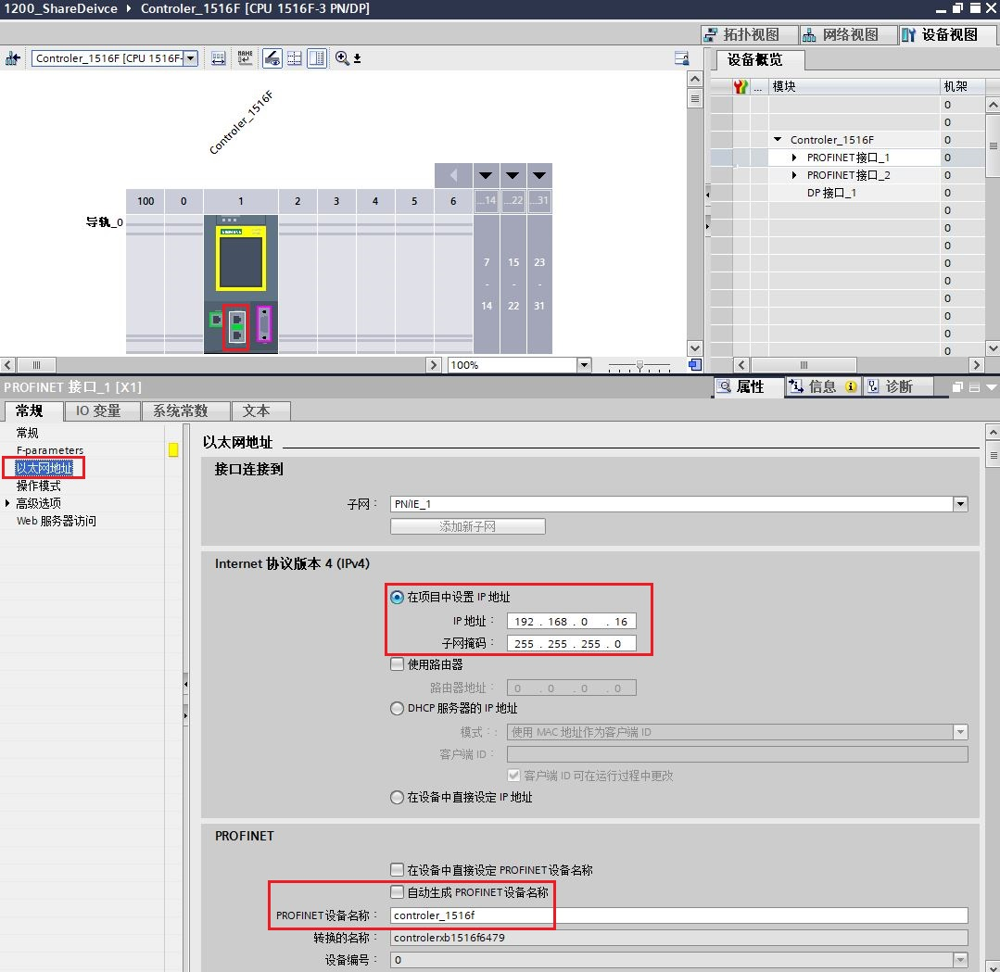
图 11 添加 CPU1516F-3 PN/DP 并设置 IP 和设备名称
（2）导入 GSD 文件
（3）添加共享设备
步骤 2 、3 与 IO 控制器 1 组态一致，这里不再赘述。
（4）配置传输区访问权和地址区
在共享设备的设备视图中，选择“常规 > Shared Device”。在 Shared Device 访问权分配表中，为各个传输区分配 IO 控制器和 IO 地址，如图 12 所示。
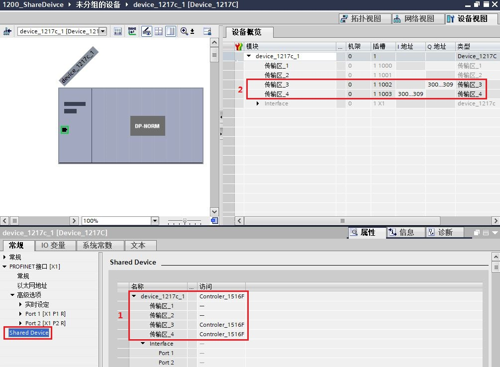
图 12 配置访问区权限和 IO 地址
1 . 不被 “controler_1516f” 访问的传输区，其访问权限需要设置为“---”，本例中，传输区_1 和传输区_2 是由“controler_1512c”访问，传输区_3 和传输区_4 是由 “controler_1516f” 访问，直接选择 “controler_1516f”。
2.在“设备概览”中，为共享设备中可被 “controler_1516f” 访问的传输区分配 IO 地址。本例中 “controler_1516f”使用 QB300~QB309 作为数据发送区，该地址对应共享设备 CPU1217C 侧的数据接收区为 IB300~IB309；“controler_1516f”使用 IB300~IB309 作为数据接收区，该地址对应共享设备 CPU1217C 侧的数据发送区为 QB300~QB309。
将 3 个 CPU 站点组态配置分别下载到对应的 CPU 中， CPU 间的 Profinet IO 通信将自动建立。在监控表中添加传输区数据，给 Q 区赋值，监控发送和接收数据区是一致的，如图 13 所示。
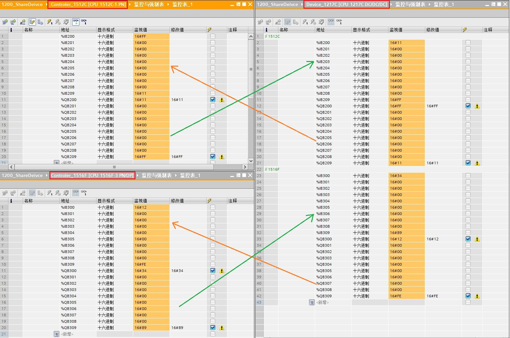
图 13 通信测试